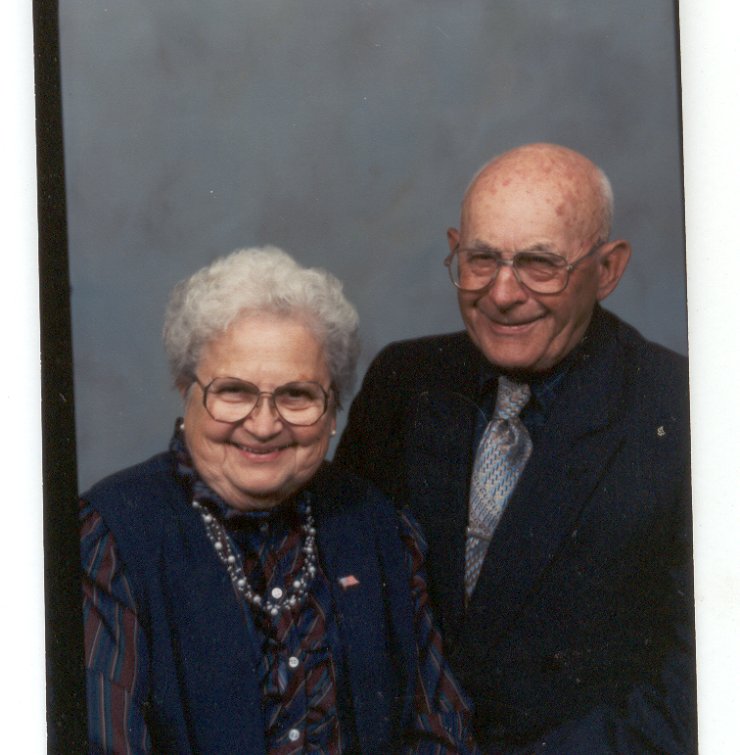
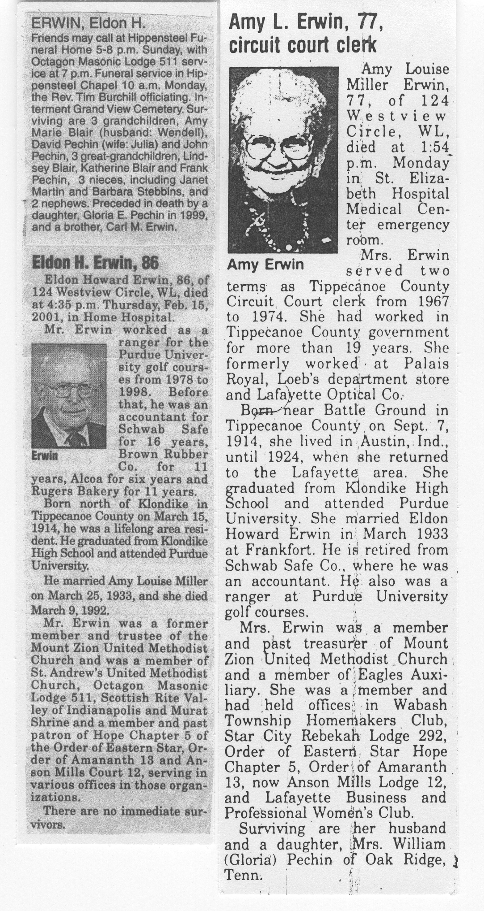

Relationship to St. Andrew: Amy transferred her membership from Mount Zion United Methodist Church to St. Andrew and was very active in the Women’s Society. Eldon was also a member and prior to joining St. Andrew, he had been a Member and Trustee for the Mount Zion United Methodist Church.
Family: Eldon was married to Amy Louise Miller for fifty-nine years until her death in 1992. They had one daughter, Gloria E. Pechin who died in 1999 and three grandchildren and three great-grandchildren.
Recognition: Eldon was an accountant for Rugers Bakery, Alcoa, Kessener Lumber, Brown Rubber and Schwab Safe, retiring in 1977. Following retirement, Eldon, an avid golfer, worked as a ranger for Purdue Golf Courses. He was a life long Member of the Masonic Lodge, Scottish Rites, Murat Shrine and Eastern Star. He served many offices in several of these associated organizations and participated in the VITA-TCE volunteer tax program for 20 years assisting seniors with tax preparation.
Memorial: Gifts were placed in the General Memorial Fund and used for sound system improvement.
